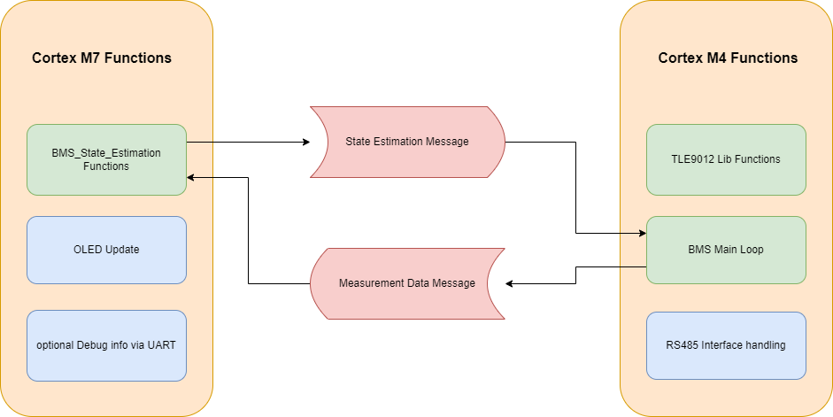
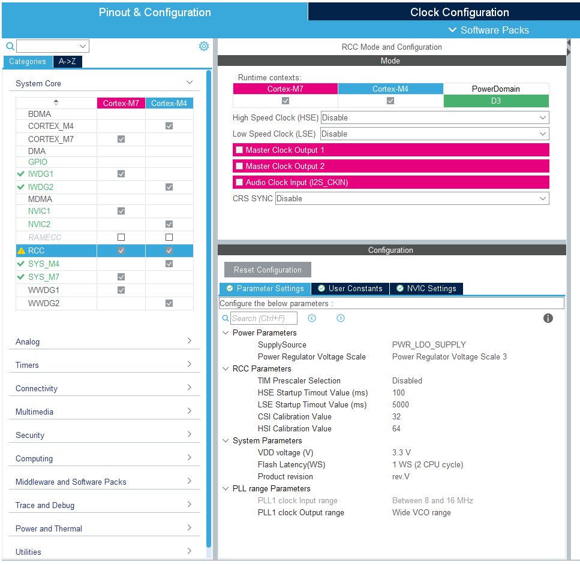

Firmware Overview
As a result of the dual core nature of the STM32H755, the software consists of two separate sub-projects which share a common .ioc file for code generation and peripheral initialization, as well as a folder named Common, containing files present in both sub-projects. Both cores operate independently by default except for a synchronization event at the start. Data between Cores is shared by a mailbox system, further described in the Inter-Processor Communication section.
To ensure the basic BMS functions, mainly monitoring and communication of log data to the host PC, these functions are running on the Cortex M4 core. The M4 core sends this data to the Cortex M7, which runs the State Estimation. This decoupling of monitoring and state estimation functions allows for testing new algorithms in real time while not compromising the monitoring function in case new state estimation algorithms are facing bugs or too high computational complexity.
Firmware Structure
The following graphic gives a brief overview of the firmware structure. Both Cores operate on a super loop approach, so no overhead and complexity of an RTOS is introduced.

Cortex M7:
In each loop iteration, the Cortex M7’s main loop checks for updated measurement data from the M4. If new data is available, the state estimation code found in the BMS_State_Estimation/Src/BMS_State_Estimation.c is executed and the results can be passed back to the M4 via an Inter-Processor Communication Mailbox. The OLED is then updated with new data in the Dusplay_Functions/Src/Display_Function.c file. The OLED is based on a SSD1306 controller IC which interfaces with the STM32 via I2C. The stm32-ssd1306 library from Aleksander Alekseev is used to interface with the display.
To send debug messages over the isolated UART Interface, the Cortex M7s _write and __io_putchar prototypes are redefined to print data via UART in blocking mode. This allows for using the printf function of stdio.h to send data as ascii strings. Due to the blocking nature, debug messages will influence execution time of the main loop!
Cortex M4:
The Cortex M4 loop starts with executing the BMS_loop() function found in Core/Src/BMS_Functions.c. This loop function uses the abstraction layer found in the TLE9012_Lib folder to interface with the TLE9012 chip, initiates a measurement, serves the watchdog of the TLE, checks if any error occurs, and calls the BMS_Balance() function to handle cell balancing. Measurement Data is written into a global (in the context of the Cortex M4) variable module, which is of the shared datatype Cell_Module for further use. The values of the module variable are then passed to the Cortex M7 via an Inter Processor Communication Mailbox.
After evaluating the state of the BMS, the rs485_communication_loop() function handling the serial RS485 protocol is called. The RS485 code is written in a way to prevent the communication protocol from interfering with the cell monitoring by the use of receive and transmit interrupts. In the rs485_communication_loop(), it is first checked if a packet is received successfully or if a timeout occurred. If a packet was successfully received, the rs485_process_package() function is called, processing the received packet and sending an appropriate response. The Transmit is also interrupt-based to ensure continuous monitoring of the Battery.
Inter Processor Communciation
Both STM32 Cores can work fully independently with their own peripherals, RAM and Flash sections. To interact with each other, a mechanism has to be established. There are many different approaches to achieve this. The main methods are Hardware Semaphores and Shared Memory. Shared Memory is a region in SRAM accessed by both cores to exchange data. Hardware Semaphores are a peripheral that can be used for the management of shared resources and to pass events in the form of interrupts between cores. ST suggests using the OpenAMP Framework as a middleware to handle the transfer of data through these mechanisms.
While the OpenAMP library provides a great set of tools to reliably solve this problem, a much simpler approach was used in this project, which can be found in the Common/Inter_Process_Communication folder. SRAM4 is used as shared Memory as suggested in the application notes of STMicro. A Number of mailboxes is initialized by the Cortex M7 before the start of the Cortex M4, each containing a header consisting of a flag to signalize if new data is available, a flag to protect the mailbox during read and write accesses, a length value, and the data itself. A mailbox register table is initialized at the start of SRAM4 to keep track of mailbox addresses and states. Access to mailboxes is provided by read and write methods. To check the status of a mailbox, a check function is provided.
To ensure correct interpretation of datatypes exchanged via mailboxes, a Shared_DataTypes header is included in the common folder, ensuring access to the datatype in both the M4 and M7 program files.
Serial Protocol
The Serial Protocol used in the RS485 interface at (115200 baud 8N1) is uses the following format
Byte 1 |
Byte 2 |
Byte 3 |
n Bytes |
Byte n+1 |
|---|---|---|---|---|
Bus ID |
Command |
Payload Length n |
Payload |
Checksum |
The Bus ID of the device is hardcoded in the Macro RS485_ID found in RS485_Communication.h and needs to be unique for each BMS on the same bus. The BMS responds to commands using the same format, addressing the Host with the ID 0x80. In case the payload length is zero, byte 3 is directly followed by the checksum. The checksum is currently not implemented and therefore can be ignored in processing, but has to be transmitted.
Currently implemented commands are GET_MODULE_INFO which returns module info in a binary format as well as GET_MODULE_INFO_AS_STRING which returns the same data in a ascii format which is human readable at the expanse of taking more bus bandwidth.
Extending the Firmware
The Firmware in this repository builds a foundation to experiment with more complex BMS algorithms. Therefore, it tries to provide easy expansion/callbacks for the following use cases:
State Estimation
The bmsStateEstimationCallback is called every time there are updated measurements from the cortex M4 and returns new estimations about the state of each cell. State estimation algorithms shall therefore be added to this function.
Balancing
Balancing is currently seen as a Cortex M4 function and is part of the BMS_Functions.c. The implementation is a simple Top-Balancing algorithm based on cell voltage and called from the BMS_Loop. A proper callback function inside the Cortex M7’s codebase might be implemented in the future and this documentation will be updated.
Communication Protocol
New commands for the RS485 interface might be added in the rs485_process_package function by appending cases to the switch(command) construct. It is strongly recommended to use 1. a preprocessor macro to assign the command ID a human-readable name, and 2. use a dedicated function called from the switch case construct to keep the readability of the function high. It is also strongly recommended to follow the naming scheme rs485_command_yourFunctionName()
Power Source
The BMS system is externally supplied. Therefore, it is vital that the power settings are configured correctly in the IOC file (STM32CubeMX).
Incorrect Settings: If the power supply settings are not correct, the BMS will fail to start normally. In this case, the system must be manually started by pulling the BOOT0 pin to High.
LDO Configuration: The specific function for the supply configuration is:
HAL_PWREx_ConfigSupply(PWR_LDO_SUPPLY);Modifying Settings: This configuration can be adjusted in the STM32CubeIDE/CubeMX interface under the RCC Tab. Ensure that the supply mode matches your hardware design (e.g., LDO supply vs. SMPS).

Recovery Procedure:
If the STM hangs due to critical faults during the boot process the Power demand usually drops down to 10-12mA. The Problem can be resolved by keeping the BOOT Pin high during the boot process using a Jumper connecting 3V3 and the STM Side of R41 while cycling the Power Supply. Power demand should increase to 30-40mA and you now can connect an STLink with the Cube Programmer and erase the flash. After this procedure, the Debug Process should work as normal.